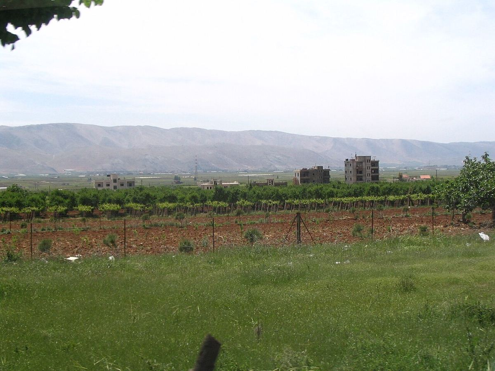

Haut plateau situé entre les chaînes du Mont-Liban et de l’Anti-Liban, la Bekaa concentre l’essentiel du vignoble libanais. Son altitude et ses étés secs donnent des rouges au fruit mûr et bien structurés, ainsi que des blancs issus de cépages locaux.

Photo: Not home at English Wikipedia · Public domain · Wikimedia Commons
Histoire
La vallée de la Bekaa est une terre agricole depuis l’Antiquité. À son extrémité nord se dressent les ruines de Baalbek, l’ancienne Héliopolis romaine, dont le temple dédié à Bacchus est l’un des mieux conservés du monde romain et rappelle le rôle du vin dans la vie de la région. Pendant des siècles, le raisin de la vallée fut surtout destiné à la consommation fraîche et à l’élaboration de l’arak, l’eau-de-vie anisée traditionnelle.
La viticulture moderne de la Bekaa commença en 1857 avec la cave fondée par les jésuites à Ksara, près de Zahlé, où furent plantés des cépages français comme le cinsault. D’autres maisons s’y ajoutèrent au cours du XXᵉ siècle, et la Bekaa devint la principale source de raisin, y compris pour des caves installées sur la côte ou dans le Mont-Liban, comme Château Musar. Depuis les années 1990, de nombreux nouveaux projets ont vu le jour dans la vallée.
Climat et sols
La vallée est un plateau allongé orienté du nord-est au sud-ouest entre deux chaînes de montagnes, avec des vignes situées pour la plupart à environ mille mètres d’altitude ou un peu plus. Le Mont-Liban arrête une bonne partie de l’humidité venue de la Méditerranée, si bien que les pluies se concentrent en hiver et que les étés sont longs, ensoleillés et secs. Les nuits fraîches et l’amplitude thermique entre le jour et la nuit aident le raisin à conserver son acidité et sa fraîcheur aromatique, et les hivers sont froids, avec de la neige sur les hauteurs voisines. La faible humidité estivale limite les maladies de la vigne, ce qui facilite une viticulture avec peu de traitements.
Les sols associent calcaires, argiles, graviers et pierres, avec des zones de terre rougeâtre. La disponibilité en eau et la profondeur du sol varient selon la position dans la vallée.
Zones
On distingue généralement la partie centrale de la vallée, autour de Zahlé et de Chtaura, où se trouvent des caves historiques comme Ksara, et la Bekaa occidentale, au pied du Mont-Liban, avec des villages comme Kefraya, où les coteaux et l’altitude offrent des conditions un peu plus fraîches. Plus au nord, autour de Baalbek et de Hermel, le climat est plus sec et plus extrême.
Cépages et styles
Les cépages rouges dominent le vignoble : le cinsault, le carignan et le grenache, présents de longue date, côtoient le cabernet-sauvignon, la syrah, le merlot et le mourvèdre. Parmi les blancs, on cultive le chardonnay, le sauvignon blanc, le viognier et le muscat, et les cépages autochtones obaideh et merwah sont de plus en plus appréciés. Les vins les plus caractéristiques sont des rouges d’assemblage, souvent élevés en barrique, au fruit mûr, aux notes épicées et à la structure ferme. On élabore aussi des blancs, des rosés et des vins doux. Il n’existe pas de règles officielles d’élevage comparables à celles des appellations européennes, et chaque cave définit ses propres pratiques.